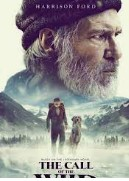
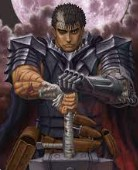

Brenno Mayer Portfolio
I'm a Web Developer
The best movies according to Brenno
My top 3 movies of all-time
Fight club
I love the philosophical insight about this movie, it's really changed my thoughts.
The wild call

This movie is really inspiring, definitely it is one of my favorite.
Berserker

It is my favourite manga but i include because the history is so good, the genre of dark-fantasy captive me in some way.
It's My birthday!
On the 12th November

What to bring
- Balons (I love Baloons)
- Cake (I'm really good at eating)
- An appetite (there will be lots of food)